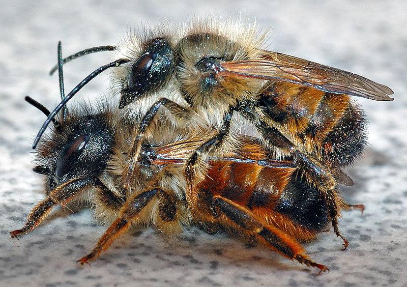

Bee & Wasp Identification
Solitary Bees
Solitary bees, as the name suggests, live singly, or in very small groups. They include insects such as mining bees or mason bees. Unfortunately, we are unable to assist with removing solitary bees. However, solitary bees are generally very quiet and not aggressive, only build very small nests, and are only active between March and July. In almost all cases they can be left alone, and will not cause you any issues.
